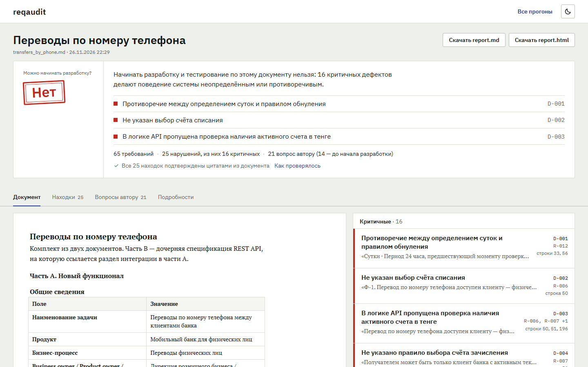

10этапов3прочтения PDF4роли в каждой ячейке≈30вызовов модели5сквозных механизмов
Проблема
Дефект в ТЗ дешевле всего поймать до первой строки кода
ТЗ
исправить одну строку
Разработка
переписать код
Тестирование
переписать код и тесты, сдвинуть релиз
документ организаторов · найдено агентом
Ф-3один push в месяц
↯
Ф-4push после смены порога
Результат
Каждая находка — с доказательством
1
Дефект и критерий19 критериев качества по 29148 и IEEE 830
2
Дословная цитатакод проверяет, что она есть в документе
3
Пункт стандарта29148 п. 5.2.5–5.2.6, IEEE 830 п. 4.3
4
Правка текстачто именно переписать в ТЗ
5
Вопрос авторус адресатом и флагом «блокирует разработку»

Отчёт в веб-интерфейсе · тот же отчёт в Markdown и одном HTML-файле
Архитектура
10 этапов, 4 фазы, один путь документа
01
Чтение файла
s0–s1
s0Приёмкакод
s1До трёх прочтений и сверкаVLM
02
База и план
s2–s4
s2Профиль и нарезкамодель
s3Таблица фактовмодель
s4План ячееккод
03
Проверка ячеек
s5–s6
s5Аналитики по ячейкамагенты
s6Оппонент и арбитрагенты
s6Калибровка серьёзностимодель
04
Доказательство и выдача
s7–s9
s7Гейты цитатгейт
s8Редактор и вопросымодель
s8bПерепроверка по ответаммодель
s9Отчёткод
документотчёт
Каждый этап пишет артефакт на диск: перезапуск с середины бесплатен, любой этап проверяется отдельно, кэш ответов модели делает повторный прогон почти бесплатным
s0–s1 · Чтение
Любой формат: у каждого свой путь
PDF
Скан
Картинка
DOCX
Markdown
TXT
HTML
RTF
Текстовый слой · PyMuPDFкод
точные символы: кириллица, ₸, цифры; скрытый текст становится находкой
Структура · Doclingкод
заголовки, таблицы, порядок чтения; постранично сверяется с текстовым слоем
Зрение · VLMмодель
сканы и картинки; скан читается дважды разными способами, код сверяет по словам
DOCX · XML документакод
текст в порядке документа, картинки внутри — через VLM
Построчный читателькод
Markdown, TXT, HTML, RTF: карта строк и якорь на каждую строку
сверка прочтений
s1 · выход
Блоки с якорями
страница или строка, раздел, уверенность блока
s1_blocks.json
Пример из практикиУ PDF-презентации текстовый слой отдал кириллицу, но молча потерял латиницу и цифры. Поймала только сверка с картинкой страницы.
s2–s4 · База и план
Сначала база документа, потом проверка
s2 · модель
Профиль и нарезка
Находит требования и без нумерации: user stories, сплошной текст, таблицы
s3 · модель + код
Таблица фактов
Сущность
Значение
Ед.
Порог уведомления
10 000
₸
Поле порога в БД
integer
тиыны
Повторные попытки
3
раз
Срок ответа
24
часа
код: один параметр в разных единицах — описан ли пересчёт?
Сущность, атрибут, значение, единица — с цитатой. Код сверяет значения и единицы
s4 · код
План ячеек
требование × критериипара в противоречиенабор целиком
Датчик допущений: если профиль плохо покрыл документ, план добавляет общий путь
База готова: дальше агенты не ищут по файлу, а проверяют и доказывают
s5–s6 · Агенты
Каждая находка проходит спор
× N ячеек параллельно
База документа
претензия: что исправить, одна попытка
s5 · агент
Аналитик
ищет дефект по карточкам критериев
гейт · код
Инварианты
схема ответа, цитата есть в блоке
s6 · агент
Оппонент
ищет контекст против находки
s6 · модель
Арбитр
решает спорное по доказательствам
в отчёт ✓
отклонено · след в трассе
находка
придирка
s6 · модель
Калибровка: серьёзность всех находок одним вызовом
вслепую, по ответам о пути и вреде; уровень ставит таблица в коде
совпадение77% → 85.5%
Принцип
Гибкость даёт модель. Инварианты держит код.
Модель
читает · судит · формулирует
читает сканы, картинки, диаграммы
находит требования без нумерации
решает, дефект это или нет
пишет правку и вопрос автору
Код
проверяет без суждения
цитата есть в документе дословно
каждый блок и пункт чек-листа учтён
серьёзность не спорит с ответами модели
числа отчёта пересчитаны, отчёт пишется всегда
…уведомление отправляется не позднее 3 рабочих дней после изменения порога…
✓ «не позднее 3 рабочих дней» найдено — находка идёт дальше
✗ «в течение 24 часов» такого текста нет — в отчёт не попадёт
s8–s8b · Вопросы автору
Агент спрашивает, а не додумывает
критичнопротиворечие
Раздел 4: 3 повторные попытки. Спецификация API: 2 попытки.
кому: аналитикублокирует разработку
Сколько повторных попыток верно — 3 или 2? Если 2, раздел 4 нужно исправить.
ответ автора
«Верно 2, раздел 4 устарел».
веб-интерфейсфайл *.answers.mdтерминал
s8b · перепроверка
дефект остаётся → правка: в разделе 4 заменить 3 на 2
находка снята как ошибочная
серьёзность изменена
вопросов автору в отчёте по документу организаторов
22
из них блокируют разработку
5
Self-improvement
Как агент становился лучше
Корпус8 документов
Прогон
Замерreqaudit-eval
Разбор трассыreqaudit-diagnose
Гипотеза
Одна правкаобщая, не под текст
14
шагов цикла в журнале
1
Корпус с эталоном и ловушками: шаблон, user stories, ГОСТ 34, большой документ, не-спецификация, инъекция для ИИ, PDF со скрытым текстом
2
Замер без вызовов модели: полнота, точность, ловушки и серьёзность по сохранённым прогонам
3
Эталон тоже проверяют: независимые экземпляры Claude видят только документ и шкалу
4
Повторяющаяся ошибка модели становится проверкой в коде, а не ещё одним абзацем промпта
5
Неудачная правка откатывается и остаётся в журнале; документ организаторов — отложенный, под него не настраивали
Прогресс
Числа, а не ощущения
полнота N1точность N1строго по цитатам, шаг за шагом
Полнота N1 по смыслу
91%
строго по цитатам: 65% → 78%
Точность N1 по смыслу
84%
строго по цитатам: 52% → 72%
Критичных найдено
8 из 12
10 из 12
N1, шаблон организаторов на незнакомом содержании
Серьёзность совпала
77%
85.5%
калибровка вслепую, 131 пара «находка — эталон»
Итог · документ организаторов
Готов к работе на настоящем ТЗ
36
требований нарезано
24
дефекта, из них 6 критичных
22
вопроса автору, 5 блокируют разработку
≈30
минут на прогон с нуля, около $5
15 / 0
Независимая проверка находок: 15 настоящих дефектов, ошибочных — 0 в том числе противоречия Ф-3 ↔ Ф-4 и Ф-2 ↔ критерий приёмки